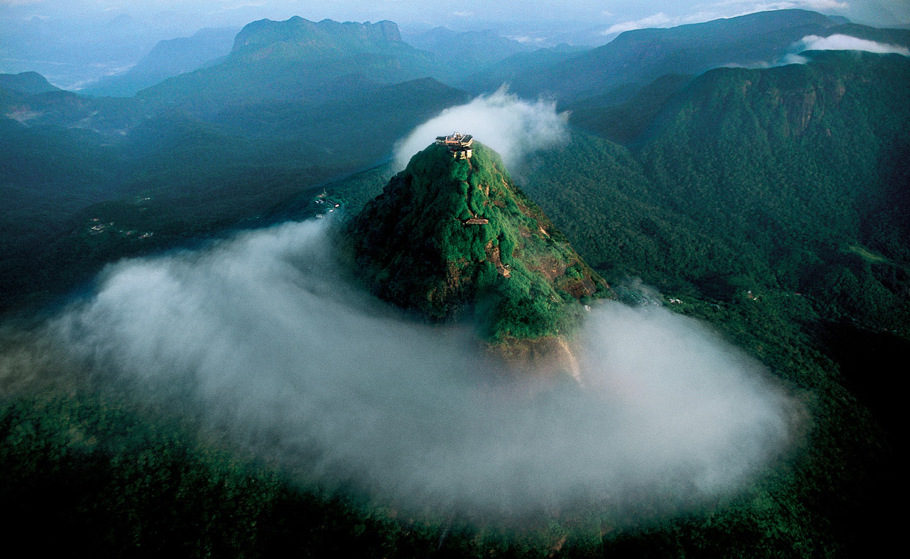

Historical Timeline:
3rd-5th Century AD: the Anuradhapura Kingdom flourishes.
The Anuradhapura Kingdom emerged as a powerful center of Theravada Buddhism. During this period, impressive temples, palaces, and irrigation systems were built, including the iconic Ruwanwelisaya stupa. Anuradhapura became a major pilgrimage site and a hub for trade and cultural exchange.

11th-13th Century AD: Polonnaruwa Kingdom thrives.
In 1505 Portuguese explorer Lourenço de Almeida first landed in Sri Lanka, primarily motivated by trade opportunities and control over the lucrative spice trade routes. But in 1517 the Portuguese established a permanent trading post in Colombo, gradually expanding their influence throughout the coastal regions. The arrival of Portuguese colonizers marked the beginning of European influence in Sri Lanka.
17th-18th Century AD: Dutch rule
In 1658 the Dutch captured Jaffna from the Portuguese, marking the beginning of their dominion over coastal regions. The Dutch captured the Sri Lankan coastal area from the Portuguese, further strengthening their presence in the region. They continue to expand trade, introduce new crops like cinnamon, and leave their mark on the island's architecture and legal system.
1815-1948 AD: British Ceylon colony.
The British consolidated their control over Sri Lanka, forming the British Ceylon colony. During this period, significant changes occurred in the economy such as the Plantation Economy based on subsistence agriculture to a plantation economy focused on cash crops, particularly tea, rubber, and coconut and coffee. Infrastructure development likely projects, including railways, roads, and irrigation systems, which facilitated trade and economic activity but often resulted in the displacement of local communities.
1948: Sri Lanka gains independence.
After a long struggle for independence, Sri Lanka finally gained its freedom from Britain on February 4, 1948. This marks a new chapter in the nation's history, as it embarks on a journey of self-determination and development.
Historical Figures
Places to Visit in Sri Lanka
Sigiriya
A visit to this place will show you an 1600 years old Sigiriya Fortress which was built by King Kasyapa. This massive compound is protected by two moats and three ramparts. It is once known to be the private residence of King Kasyapa and also one of the best places to visit in Sri Lanka.If you are interested in ancient places, this is one of the best tourist places to visit in Sri Lanka.
Location: 31 min (16.8 km) from Sri Lanka via Inamaluwa
Timings: Opens daily from 7 AM to 5:30 PM.
Best Time to Visit: This area will be early in the morning or late in the afternoon.

World's end Nuwaraeliya
One of the most jaw-dropping experience you can ever have in Sri Lanka is the World’s End on the Horton Plains. Enjoy a tuk-tuk ride to the Horton plains from Nuwara Eliya and it is among the best tourist places to visit in Sri Lanka.
You can see animals such as leopards and deer. Experience the amazing flora and fauna which will be an amazing experience.
Location: The nearest station is in Nanu Oya which is about 8km.
Highlights: Baker’s fall which is truly spectacular
Best Time to Visit: The best time to reach there is before 10:00 AM before it gets too cloudy because you will not be able to see anything after that.
Yala National Park
Spotting a leopard prowling in the Park of Yala is quite an ordinary spectacle. Witness the untamed world of nature in the Yala National Park and quench your eagerness to explore and learn more about wildlife. Yala National Park is located in the South-East part of Sri Lanka.
Amidst both nature and wildlife, you will also find some faint cultural ruins which give the travellers a deeper insight about the earlier civilization. the Yala National Park lies in the south-eastern part of Sri Lanka closely hugging the Indian Ocean. It is amongst the famous Sri Lanka tourist places that attracts a lot of tourists every year.
Highlights: A safari to this natural park will surely leave you jaw drop as you will be able to witness Sri Lankan Sloth Bear, Leopards, and Elephants in big numbers.
The Nine Arch Bridge
The Nine Arch Bridge, also known as the ‘Bridge in the Sky’ was constructed by connecting two bog mountains when constructing the Badulla – Colombo railway. This bridge is 300 feet in length, 25 feet in width and 80-100 feet in height. It is one of the best examples of colonial-era railway construction in the country. The Bridge can be reached by travelling 2km on Gotuwala road starting from Halpe Textile centre in Badulla Bandarawela road. The surrounding area has seen a steady increase in tourism due to the bridge’s architectural ingenuity and the profuse greenery in the nearby hillsides.
The Temple of the Sacred Tooth Relic
Nestled close to the Udawattakele Sanctuary, The Temple of the Sacred Tooth Relic is one of the most important shrines of Sri Lanka. Also named as Dalada Maligawa, this temple is based in the royal palace of the Kingdom of Kandy.
Housing the legendary Budda tooth, the temple is a World Heritage site though very little are the remnants of the original temple built around 1600. Amazing ornamentation with golden fence and extravagant Canadian architecture makes it a blissful sight for the visitors.
Location: Royal Palace, Kandy
Timings: 5:30 AM to 8:00 PM

Bomburu Ella
Bomburu Ella, also known as Perawella Falls, is a waterfall at Uva-Paranagama Divisional Secretariat of Sri Lanka. It is located near the border of Nuwara Eliya and Badulla districts, approximately 15 km from Welimada town. The fall is about 50 m in height and 20 m in width and consists of several small waterfalls grouped together.[1] The source of the falls is a lake located in the central highlands of Sri Lanka
Mirissa Beach
Mirissa is one of the most popular beach destinations in southern Sri Lanka, and for a good reason! The area has it all, beautiful Sri Lankan beaches, great waves for surfing, and waters teeming with marine life, from turtles to big blue whales. Spend your days enjoying fresh coconuts in your hammock, eating delicious food from beachside restaurants, and zooming around by motorbike. Four days is the perfect amount of time to absorb the laidback culture of this sunny beach town, enjoying all the top things to do in Mirissa.

Adam’s Peak
Adam’s Peak, mountain in southwestern Sri Lanka. It is 7,559 feet (2,304 metres) high and located 11 miles (18 km) northeast of Ratnapura, the capital of Sabaragamuwa province. It is well known for the Sri Pada (Sinhala for “Sacred Footprint”), a hollow that is 67 inches (170 cm) long and 18 inches (46 cm) wide and resembles the print of a human foot. The Sri Pada is venerated by Buddhists, Hindus, Christians, and Muslims. Many pilgrims of all faiths visit the peak every year.
Cultural Divercity
|
Religious Practices: |
Languages: |
| 1 |
Buddhism (dominant) |
Sinhala (official) |
| 2 |
Hinduism |
Tamil |
| 3 |
Islam |
English |
| 4 |
Christianity |
Malay |
Arts and Traditions
Wood carvings
Sri Lanka has a rich tradition of wood carving, dating back centuries. Skilled artisans use various types of wood, including ebony, rosewood, and satinwood, to create intricate sculptures, masks, and furniture. Some popular motifs include deities, animals, and floral patterns. The traditional wood carving technique involves using chisels and gouges to carve the wood, followed by polishing and finishing with natural oils.
Paintings
Sri Lankan paintings are known for their vibrant colors and intricate details. Traditional styles include Kandyan paintings, which depict scenes from mythology and folklore, and Sigiriya paintings, with their distinctive red, white, and black color palette. Modern Sri Lankan painting also reflects diverse influences, incorporating Western techniques alongside traditional motifs and themes.

Jewelry
Sri Lankan jewelry is renowned for its beauty and craftsmanship. Skilled goldsmiths create intricate necklaces, earrings, bracelets, and rings using precious metals and gemstones like sapphires, rubies, and emeralds. Traditional designs often incorporate auspicious symbols and motifs, reflecting cultural and religious influences.
Kandyan dancing
Kandyan dancing is a vibrant and energetic art form originating from the Kandyan Kingdom in central Sri Lanka. It is characterized by its graceful movements, elaborate costumes, and rhythmic drumming and chanting. The dance tells stories and depicts rituals, often conveying religious and cultural themes Kandyan dancing is a UNESCO-recognized Intangible Cultural Heritage of Humanity.
Puppetry
Sri Lankan puppetry has a long history, dating back to ancient times. Traditionally, puppet shows were performed in temples and public spaces, entertaining audiences with stories from mythology and folklore. Puppet forms include rod puppets, glove puppets, and shadow puppets, each with unique characteristics and expressive capabilities. Today, puppetry continues to be enjoyed by audiences of all ages and plays a vital role in preserving Sri Lankan cultural traditions.

Brasswares
Sri Lanka's brassware industry, now very much a part of the country's culture and national crafts, is widely believed to be a colonial Dutch import, although it is also possible that it arrived from the Indian subcontinent or was brought by the Arab traders who first visited the island.
Image Gallery
Mihinthalaya
Mihinthalaya temple.
Polonnaruwa
Polonnaruwa temple.
Dutch colony
Dutch colony.
British colony
British colony.
Anagarika Dharmapala
Historical Figure
Sirimawo Bandaranaike
Historical Figure

Yala National park
Nature
Food Culture in Sri Lanka
Rice and Curry
Considered the national dish of the country, Sri Lankan rice and curry consists of steaming hot, fluffy rice (samba or kakulu varieties) that is served with a variety of side dishes commonly called curries. There are typically at least three (ideally five) different curries served along with the rice, one of which is usually based on fish or meat, and the other two are based on vegetables.
Fish ambul thiyal (sour fish curry)
Ambul thiyal is a dry curry dish, meaning all the ingredients are simmered with a small amount of water and cooked until the liquid reduces. This allows the spice mixture to coat each cube of fish.
The fish – usually something large and firm, such as tuna – is cut into cubes, then sauteed in a blend of spices including black pepper, cinnamon, turmeric, garlic, pandan leaves and curry leaves. Perhaps the most important ingredient is dried goraka, a small fruit responsible for giving the fish a sour flavor.

Kottu (also, kottu roti)
The roti is normally fried at the beginning of the day, piled into stacks and served as it’s ordered. When you place an order, the kottu chef will fry and chop the roti with a selection of ingredients you choose. The result is a tasty mixture of salty pieces of fried dough, lightly spiced and extremely comforting.
Kottu is served with spicy curry sauce, which you can either use as a dip or pour over your entire plate./p>
Milk rice (Kiri Bath)
It’s an easy breakfast dish you can make with two main ingredients, so usher in the new year or celebrate a memorable occasion with this special milk rice dish.
To those of you who are not familiar with the term”Kiribath”, it’s a milk rice dish made up of rice and coconut milk.
Cooking this Sri Lankan milk rice recipe can be a real-time-saver when you need to sort out breakfast for a crowd.

Hoppers & Strings Hoppers (appa)
Hoppers are the Sri Lankan answer to the pancake. The batter is made from a slightly fermented concoction of rice flour, coconut milk, sometimes coconut water and a hint of sugar.
A ladle of batter is fried in a small wok and swirled around to even it out. Hoppers can be sweet or savory, but one of the local favorites is egg hoppers. An egg is cracked into the bowl-shaped pancake, creating the Sri Lankan version of an “egg in the hole.”
Egg hoppers are garnished with lunu miris, a sambol of onions, chilies, lemon juice and salt
Polos (green jackfruit curry)
Jackfruit is consumed in a number of different stages of ripeness, from very ripe and sweet to green and starchy. Polos is a Sri Lankan curry prepared with young green jackfruit.
The fruit is sliced into bite-sized chunks and boiled until soft.
It’s then cooked with onions, garlic, ginger and spices like mustard seeds, turmeric, chili powder, roasted curry powder, pandan leaves and curry leaf sprigs. The final step is to add coconut milk and simmer to reduce most of the liquid, leaving all the beautiful flavors within the cubes of jackfruit.
Resources and Further Information
Copyright © 2024 | Culture of South Asia